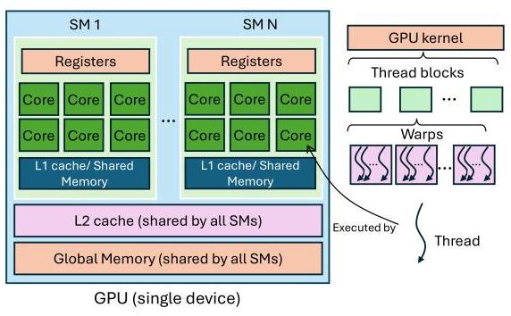
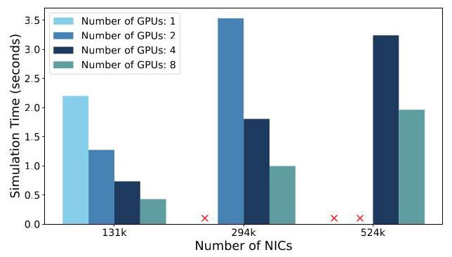
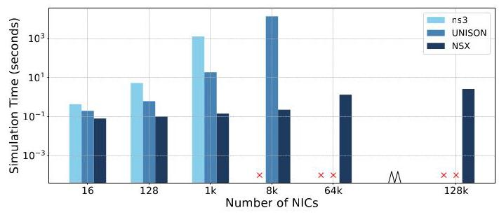
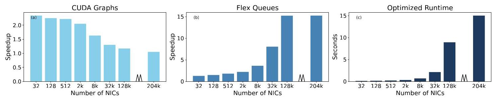

NSX: Large-Scale Network Simulation on an AI Server
Sajy Khashab \({}^{ \dagger }\) , Hariharan Sezhiyan \({}^{ \dagger }\) , Rani Abboud \({}^{ \dagger }\) , Alex Normatov \({}^{ \dagger }\) , Stefan Kaestle \({}^{ \dagger }\) Eliav Bar-Ilan \({}^{ \dagger }\) , Mohammad Nassar \({}^{ \dagger }\) , Omer Shabtai \({}^{ \dagger }\) , Wei Bai \({}^{ \dagger }\) , Matty Kadosh \({}^{ \dagger }\) Jiarong Xing \({}^{ \ddagger }\) , Mark Silberstein \({}^{\dagger * }\) , T.S. Eugene Ng‡, Ang Chen \({}^{\dagger * }\)
Sajy Khashab \({}^{ \dagger }\) , Hariharan Sezhiyan \({}^{ \dagger }\) , Rani Abboud \({}^{ \dagger }\) , Alex Normatov \({}^{ \dagger }\) , Stefan Kaestle \({}^{ \dagger }\) Eliav Bar-Ilan \({}^{ \dagger }\) , Mohammad Nassar \({}^{ \dagger }\) , Omer Shabtai \({}^{ \dagger }\) , Wei Bai \({}^{ \dagger }\) , Matty Kadosh \({}^{ \dagger }\) Jiarong Xing \({}^{ \ddagger }\) , Mark Silberstein \({}^{\dagger * }\) , T.S. Eugene Ng‡, Ang Chen \({}^{\dagger * }\)
†NVIDIA *Rice University *Technion §University of Michigan
†NVIDIA *莱斯大学 (Rice University) *以色列理工学院 (Technion) §密歇根大学 (University of Michigan)
Abstract
Network innovation is key to supporting AI workloads. Packet-level simulation is indispensable for testing new network features as it enables high-fidelity experimentation. However, today's simulators struggle to scale to large topologies that are typical to AI clusters. To scale the simulation, we have built NSX which is a new simulator that takes advantage of AI servers themselves (e.g., NVIDIA's DGX) to experiment with AI networks. Network simulation has unique workload characteristics that make AI servers an ideal fit: relatively simple, parallelizable compute, with high memory bandwidth pressure. Yet, in order to fully leverage this platform, we need new techniques to rearchitect network simulators for GPU execution. We describe the design decisions that have gone into NSX, and report evaluation results from our current prototype: NSX can scale simulation to networks of \({524}\mathrm{k}\) nodes, and it finishes \({0.1}\mathrm{\;{ms}}\) simulation in less than 2 seconds on a DGX-H100 box. NSX is being used by NVIDIA's networking team on a daily basis for AI cluster design, and new features are added to it on a regular basis.
网络创新 (network innovation) 是支持 AI 工作负载 (AI workload) 的关键。分组级模拟 (packet-level simulation) 对于测试新网络功能不可或缺，因为它支持高保真实验 (high-fidelity experimentation)。然而，当今的模拟器 (simulator) 难以扩展到 AI 集群 (AI cluster) 中常见的大型拓扑 (topology)。为了扩展模拟 (simulation) 的规模，我们构建了 NSX，这是一个新的模拟器，它利用 AI 服务器 (AI server) 本身（例如 NVIDIA 的 DGX）来对 AI 网络 (AI network) 进行实验。网络模拟 (network simulation) 具有独特的工作负载特征 (workload characteristic)，使其非常适合 AI 服务器：相对简单、可并行计算 (parallelizable compute)，并伴随高内存带宽压力 (memory bandwidth pressure)。然而，为了充分利用该平台，我们需要新技术来为 GPU 执行 (GPU execution) 重新架构网络模拟器。我们描述了 NSX 中的设计决策 (design decision)，并报告了当前原型 (prototype) 的评估结果：NSX 可以将模拟扩展到 \({524}\mathrm{k}\) 个节点 (node) 的网络，并且它在一台 DGX-H100 机器上不到 2 秒内完成 \({0.1}\mathrm{\;{ms}}\) 的模拟。NSX 正被 NVIDIA 的网络团队 (networking team) 日常用于 AI 集群设计 (AI cluster design)，并且新功能 (new feature) 会定期加入其中。
ACM Reference Format:
Sajy Khashab \({}^{ \dagger }\) , Hariharan Sezhiyan \({}^{ \dagger }\) , Rani Abboud \({}^{ \dagger }\) , Alex Normatov \({}^{ \dagger }\) , Stefan Kaestle \({}^{ \dagger }\) , Eliav Bar-Ilan \({}^{ \dagger }\) , Mohammad Nassar \({}^{ \dagger }\) , Omer Shabtai \({}^{ \dagger }\) , Wei \({\text{ Bai }}^{ \dagger }\) , Matty Kadosh \({}^{ \dagger }\) , Jiarong Xing \({}^{ \ddagger }\) , Mark Silberstein \({}^{\dagger * }\) , T.S. Eugene Ng \(\ddagger\) , Ang Chen \({}^{\dagger \text{ § }}\) . 2025. NSX: Large-Scale Network Simulation on an AI Server.
Sajy Khashab \({}^{ \dagger }\)、Hariharan Sezhiyan \({}^{ \dagger }\)、Rani Abboud \({}^{ \dagger }\)、Alex Normatov \({}^{ \dagger }\)、Stefan Kaestle \({}^{ \dagger }\)、Eliav Bar-Ilan \({}^{ \dagger }\)、Mohammad Nassar \({}^{ \dagger }\)、Omer Shabtai \({}^{ \dagger }\)、Wei \({\text{ Bai }}^{ \dagger }\)、Matty Kadosh \({}^{ \dagger }\)、Jiarong Xing \({}^{ \ddagger }\)、Mark Silberstein \({}^{\dagger * }\)、T.S. Eugene Ng \(\ddagger\)、Ang Chen \({}^{\dagger \text{ § }}\)。2025。NSX：在 AI 服务器上进行大规模网络仿真（Large-Scale Network Simulation on an AI Server）。
In 2nd Workshop on Networks for AI Computing (SIGCOMM '25), September 8-11, 2025, Coimbra, Portugal. ACM, New York, NY, USA, 7 pages. https://doi.org/10.1145/3748273.3749199
载于第二届 AI 计算网络研讨会 (2nd Workshop on Networks for AI Computing)（SIGCOMM '25），2025年9月8日至11日，葡萄牙科英布拉 (Coimbra)。ACM，美国纽约州纽约市 (New York, NY, USA)，7页。https://doi.org/10.1145/3748273.3749199
1 Introduction
AI clusters are creating new demands on the network, and packet-level simulation is indispensable for network analysis. New features (e.g., topology designs, congestion control, routing algorithms) need to be studied in simulated environments before production, but existing simulators are slow \(\left\lbrack {{19},{25},{29} - {31}}\right\rbrack\) and struggle to scale to large AI networks. With the modern AI cluster soon approaching million GPUs [28] and with growing link speeds that will exceed Terabit/s, simulator scalability bottlenecks will further worsen. Left unaddressed, this will hinder the speed of innovation.
AI 集群正在对网络提出新需求，而分组级模拟 (packet-level simulation) 对网络分析不可或缺。在生产部署之前，需要在模拟环境中研究新特性（例如拓扑设计 (topology designs)、拥塞控制 (congestion control)、路由算法 (routing algorithms)），但现有模拟器 (simulator) 速度慢 \(\left\lbrack {{19},{25},{29} - {31}}\right\rbrack\)，且难以扩展到大型 AI 网络。随着现代 AI 集群很快接近百万块 GPU [28]，并且链路速率不断增长、将超过太比特/秒 (Terabit/s)，模拟器的可扩展性瓶颈 (scalability bottlenecks) 将进一步加剧。若不加以解决，这将阻碍创新速度。
AI has been driving much of this cluster growth, and AI servers like NVIDIA's DGX have become the main building block; however, the vast majority of today's packet-level simulators are designed for traditional CPU architectures [19, 25, 29, 34]. These simulators cannot effectively scale to AI-scale clusters. Recent work has only used GPUs in limited ways, such as building ML-based predictive simulation [30, 31], or concurrently executing many embarrassingly-parallel "parameter sweep" simulations [14]. However, the more fundamental problem-accelerating a single simulation of large-scale networks at the size of AI clusters-remains difficult because it requires tackling the scalability bottlenecks at the root. This in turn requires rethinking network simulator design.
人工智能 (AI) 推动了这类集群增长的很大一部分，而 NVIDIA 的 DGX 等 AI 服务器 (AI server) 已成为主要构建模块；然而，当今绝大多数分组级模拟器 (packet-level simulator) 都是为传统中央处理器 (CPU) 架构设计的 [19, 25, 29, 34]。这些模拟器无法有效扩展到 AI 规模 (AI-scale) 集群。近期工作仅以有限方式使用图形处理器 (GPU)，例如构建基于机器学习 (ML) 的预测性模拟 (predictive simulation) [30, 31]，或并发执行许多易并行 (embarrassingly-parallel) 的“参数扫描 (parameter sweep)”模拟 [14]。然而，更根本的问题——将大规模网络 (large-scale network) 的单次模拟加速到 AI 集群规模——仍然困难，因为它需要从根源上解决可扩展性瓶颈 (scalability bottleneck)。这反过来又需要重新思考网络模拟器设计 (network simulator design)。
We observe that network simulation workloads have distinct properties: relatively simple, parallelizable compute, with high memory bandwidth pressure. Packet-level simulation passes times-tamped events (e.g., packet arrival/departure) through a topology of network elements, with event handlers triggered at each processing step. In terms of compute, event handlers (e.g., packet header operations such as decrementing TTLs) do not require complex logic, but they need to process a large number of discrete events concurrently. GPU compute uses vectorized processing (in SIMT, or single instruction multiple threads [33, 38]), which executes the same logic on many parallel ALUs; this stands in stark contrast to CPUs with a much smaller number of high-performance threads. Moreover, network simulation is memory-intensive [20], not only because a large amount of packets need to be sent/received at each hop, but also because larger topologies inherently contain more network state (e.g., to encode all switches and NICs including their buffers). On CPU platforms, the working set will easily exceed the faster cache and become bottlenecked at the slower DRAM; in contrast, GPU platforms provide abundant high-bandwidth memory (HBM) with a unified address space, which have the potential to scale the simulation much further.
我们观察到，网络仿真工作负载 (network simulation workloads) 具有独特性质：相对简单、可并行化的计算 (parallelizable compute)，并伴随高内存带宽压力 (high memory bandwidth pressure)。分组级仿真 (packet-level simulation) 将带时间戳的事件（例如分组 (packet) 到达/离开）沿网络元件 (network elements) 组成的拓扑 (topology) 传递，并在每个处理步骤触发事件处理器 (event handlers)。在计算方面，事件处理器 (event handlers)（例如递减 TTL 等分组头操作 (packet header operations)）不需要复杂逻辑，但需要并发处理大量离散事件。GPU 计算 (GPU compute) 使用向量化处理 (vectorized processing)（在 SIMT，即单指令多线程 (single instruction multiple threads) [33, 38] 中），其在许多并行 ALU (parallel ALUs) 上执行相同逻辑；这与高性能线程数量少得多的 CPU 形成鲜明对比。此外，网络仿真 (network simulation) 是内存密集型 (memory-intensive) [20]，不仅因为每一跳都需要发送/接收大量分组 (packets)，还因为更大的拓扑 (topologies) 本身包含更多网络状态 (network state)（例如，编码所有交换机与 NIC 及其缓冲区）。在 CPU 平台 (CPU platforms) 上，工作集 (working set) 很容易超过更快的缓存 (cache) 并在较慢的 DRAM 上形成瓶颈；相比之下，GPU 平台 (GPU platforms) 提供具有统一地址空间 (unified address space) 的充足高带宽内存 (HBM, high-bandwidth memory)，有潜力进一步大幅扩展仿真规模。
Hence, the premise of NSX is that modern AI servers are themselves an ideal fit for network simulation workloads. For example, NVIDIA's DGX hosts eight GPUs, each with 80 GBs of HBM accessible at TB/s bandwidth from hundreds of thousands of threads; a low-latency high-throughput NVLINK interconnect between GPUs further enables efficient scaling across multiple GPUs. The GPU programming software ecosystem is also quickly maturing. The CUDA framework now supports general program execution with familiar interfaces (e.g., in C/C++/Python), with increasingly abundant developer expertise, enabling non-ML workloads to benefit from GPU computation. Combined, these hardware and software trends motivate us to leverage AI servers. NSX is a new network simulator rearchitected for scalable execution on an AI server, and its design challenges lie in fully extracting the performance of such servers for simulation workloads, using several techniques.
因此，NSX 的前提是：现代 AI 服务器 (AI server) 本身非常适合网络仿真 (network simulation) 工作负载。例如，NVIDIA 的 DGX 搭载八块 GPU，每块 GPU 配备 80 GB 的高带宽内存 (HBM)，可由数十万个线程以 TB/s 带宽访问；GPU 之间低延迟、高吞吐的 NVLink 互连进一步实现了跨多块 GPU 的高效扩展。GPU 编程软件生态也在快速成熟。CUDA 框架如今支持以熟悉的接口（例如 C/C++/Python）执行通用程序，开发者经验日益丰富，使非机器学习 (non-ML) 工作负载能够受益于 GPU 计算。这些硬件与软件趋势共同促使我们利用 AI 服务器。NSX 是一种新型网络仿真器，经过重新架构以在 AI 服务器上实现可扩展执行；其设计挑战在于利用若干技术，为仿真工作负载充分挖掘此类服务器的性能。
- Khashab, Sezhiyan, and Abboud have contributed equally to NSX.
- Khashab、Sezhiyan 和 Abboud 对 NSX 作出了同等贡献。
Permission to make digital or hard copies of all or part of this work for personal or classroom use is granted without fee provided that copies are not made or distributed for profit or commercial advantage and that copies bear this notice and the full citation on the first page. Copyrights for third-party components of this work must be honored. For all other uses, contact the owner/author(s).
兹准许为个人或课堂使用而免费制作本作品全部或部分的数字或硬拷贝，前提是这些拷贝不得为营利或商业优势而制作或分发，且拷贝须在首页保留此声明。本作品中第三方组件的版权必须予以尊重。其他用途请联系所有者/作者。
SIGCOMM '25, Coimbra, Portugal
SIGCOMM '25，葡萄牙科英布拉
© 2025 Copyright held by the owner/author(s).
© 2025 版权归所有者/作者所有。
ACM ISBN 979-8-4007-2082-6/25/09
ACM ISBN 979-8-4007-2082-6/25/09
https://doi.org/10.1145/3748273.3749199
https://doi.org/10.1145/3748273.3749199
Execution model. To unleash GPU parallelism, NSX adopts a granular execution model customized for SIMT threads, by breaking down a device into very small modules. For instance, even a single ingress/egress queue of a switch is designed as a module, and this is more granular than existing network simulators. This design enables each module to be executed on a SIMT thread, maximizing the performance of vectorized GPU compute. However, a potential downside for granular execution is that it may introduce control flow overheads involving the CPUs. To address this, NSX uses a systolic kernel launch order that leverage the network hierarchy in AI clusters, and further uses recent GPU features (i.e., CUDA graphs) to minimize CPU overheads.
执行模型。为释放 GPU 并行性，NSX 采用一种针对 SIMT 线程 (SIMT thread) 定制的细粒度执行模型 (granular execution model)，通过将设备 (device) 分解为非常小的模块 (module) 来实现。例如，甚至交换机的单个入口/出口队列 (ingress/egress queue) 也被设计为一个模块，这比现有网络模拟器 (network simulator) 更加细粒度。该设计使每个模块都能在一个 SIMT 线程上执行，从而最大化向量化 GPU 计算 (vectorized GPU compute) 的性能。然而，细粒度执行的一个潜在缺点是，它可能引入涉及 CPU 的控制流开销 (control flow overhead)。为解决这一问题，NSX 使用一种利用 AI 集群 (AI cluster) 中网络层次结构 (network hierarchy) 的脉动式内核启动顺序 (systolic kernel launch order)，并进一步使用近期的 GPU 特性（即 CUDA 图 (CUDA graphs)）来最小化 CPU 开销 (CPU overhead)。
Event queues. Another challenge is that granular modules will increase the amount of inter-module communication [9], because packets need to be passed through many modules for end-to-end simulation. We design NSX's event queues to provide a producer-consumer abstraction; the underlying implementation backs this abstraction using a combination of first-in-first-out (FIFO) and priority queues, and this choice is made depending on the inter-module connectivity pattern. As the rationale, FIFO queues are linear data structures and easier to maintain. However, priority queues are better suited for high fan-in scenarios where, otherwise, dequeueing from many FIFOs will result in irregular memory access.
事件队列 (Event queues)。另一个挑战是，细粒度模块 (granular modules) 会增加模块间通信 (inter-module communication) 的量 [9]，因为在端到端仿真 (end-to-end simulation) 中，分组 (packet) 需要经过许多模块。我们将 NSX 的事件队列设计为提供生产者-消费者抽象 (producer-consumer abstraction)；底层实现使用先进先出队列 (first-in-first-out queues, FIFO) 与优先队列 (priority queues) 的组合来支撑这一抽象，并根据模块间连接模式 (inter-module connectivity pattern) 做出这一选择。其理由是，FIFO 队列是线性数据结构 (linear data structures)，更易于维护。然而，优先队列更适合高扇入 (high fan-in) 场景；否则，从许多 FIFO 中出队 (dequeueing) 会导致不规则内存访问 (irregular memory access)。
Event causality. In a simulation, modules concurrently dequeue events from their inbound queues, and enqueue new events into outbound queues. For correctness, simulation needs to process events in timestamped order to preserve event causality. While causality is a global property, a naïve design with topology-wide coordination would cause high overheads. Instead, we adapt a decentralized algorithm to avoid topology-wide synchronization. Specifically, each module relies on its adjacent queue state to safely process as many events as possible, but only uses local synchronization methods; this avoids causing high contention across the GPU substrate.
事件因果关系 (event causality)。在仿真 (simulation) 中，模块 (module) 会并发地从其入站队列 (inbound queue) 中出队事件 (event)，并将新事件入队到出站队列 (outbound queue) 中。为保证正确性，仿真需要按时间戳顺序处理事件，以保持事件因果关系。尽管因果关系是一种全局属性，但采用拓扑范围协调 (topology-wide coordination) 的朴素设计会造成高开销。相反，我们采用一种去中心化算法 (decentralized algorithm) 来避免拓扑范围同步 (topology-wide synchronization)。具体而言，每个模块依赖其相邻队列状态 (adjacent queue state) 来安全地处理尽可能多的事件，但仅使用本地同步方法 (local synchronization method)；这避免了在 GPU 底层 (GPU substrate) 上造成高争用 (high contention)。
Transparent scaling. Scaling to multiple GPUs is essential to simulate large-scale topologies, which otherwise exceed the memory capacity of any single GPU. This requires transferring events across GPU boundaries, but a naïve design needs to marshal and demarshal packets across GPUs via collectives such as NCCL. This not only involves CPUs, but also results in poor performance since NCCL is optimized for bulk transfers whereas simulation passes smaller data batches in discontiguous memory. We observe that the NVLINK fabric offers new opportunities to instead leverage load/store-based shared memory abstraction for transparent scaling across GPUs, obviating NCCL overheads.
透明扩展 (Transparent scaling)。扩展到多个 GPU 对于仿真大规模拓扑 (topologies) 至关重要；否则这些拓扑会超出任何单个 GPU 的内存容量。这需要跨 GPU 边界传输事件 (events)，但一种朴素设计需要通过 NCCL 等集合通信 (collectives) 在 GPU 之间封送 (marshal) 和解封送 (demarshal) 分组 (packets)。这不仅涉及 CPU，还会导致性能不佳，因为 NCCL 针对批量传输 (bulk transfers) 进行了优化，而仿真会在不连续内存 (discontiguous memory) 中传递较小的数据批次 (data batches)。我们观察到，NVLINK 互连结构 (NVLINK fabric) 提供了新的机会，可以转而利用基于加载/存储的共享内存抽象 (load/store-based shared memory abstraction) 来实现跨 GPU 的透明扩展，从而消除 NCCL 开销 (overheads)。
This paper describes the current snapshot of NSX, since new features are added on a regular basis. NVIDIA engineers have been heavily relying NSX to experiment with AI networking features, such as adaptive routing, congestion control, and topology design. NSX can scale network simulation to \({524}\mathrm{k}\) nodes, and finish a \({0.1}\mathrm{\;{ms}}\) simulation under 2 seconds on an DGX-H100 box. This provides orders-of-magnitude higher speedups than CPU-based simulation, and allows network engineers to derive insights rapidly. We conclude with extensions and emerging use cases of NSX.
本文描述了 NSX 的当前快照 (snapshot)，因为新功能会定期添加。NVIDIA 工程师一直高度依赖 NSX 来试验 AI 网络 (AI networking) 功能，例如自适应路由 (adaptive routing)、拥塞控制 (congestion control) 和拓扑设计 (topology design)。NSX 可以将网络仿真 (network simulation) 扩展到 \({524}\mathrm{k}\) 个节点 (nodes)，并在 DGX-H100 设备上于 2 秒内完成一次 \({0.1}\mathrm{\;{ms}}\) 的仿真。与基于 CPU 的仿真 (CPU-based simulation) 相比，这提供了高出数个数量级的加速比 (speedup)，并使网络工程师能够快速获得洞见。最后，我们总结了 NSX 的扩展 (extensions) 与新兴用例 (emerging use cases)。
2 Motivation and Background
Packet-level simulators model a network experiment as a series of discrete events (e.g., packets, timers) that change the state of the network components (e.g., switches, NICs). This high-fidelity analysis is not available in other paradigms like coarser-grained flow simulation or ML-based predictive simulation [3, 30, 31]. Therefore, packet-level simulation has gained wide popularity for studying new network features. Furthermore, other simulation paradigms (e.g., ML-based prediction) often rely on packet-level simulation data as a starting point to train their models.
分组级 (packet-level) 模拟器将网络实验建模为一系列离散事件 (discrete events)（例如分组 (packets)、定时器 (timers)），这些事件会改变网络组件 (network components)（例如交换机 (switches)、网络接口卡 (NIC)）的状态。这种高保真分析 (high-fidelity analysis) 在较粗粒度的流模拟 (coarser-grained flow simulation) 或基于机器学习的预测式模拟 (ML-based predictive simulation) 等其他范式中不可用 [3, 30, 31]。因此，分组级模拟在研究新的网络特性方面已得到广泛应用。此外，其他模拟范式（例如基于机器学习的预测 (ML-based prediction)）通常依赖分组级模拟数据作为训练其模型的起点。
However, packet-level simulators are notoriously slow and they struggle to scale to large topologies that interconnect servers that support a single distributed application, such as today's AI workloads. Modern networks produce a large number of events, as link speeds soon reach Tbps and cluster sizes exceed \({100}\mathrm{k}\) GPUs and will reach 1 million [5, 28]. This is fueled by the insatiable need of AI training workloads, which require tight coupling of computing resources at such unprecedented scales. Hence, datacenter providers are constructing ever larger clusters and introducing new networking technologies (e.g., topologies, congestion control, in-network aggregation, load-aware routing). To experiment with new features, however, simulation will increasingly become a bottleneck-especially because simulation is most needed to study how a feature would perform at future-generation cluster scales, which could be one order of magnitude larger than the existing cluster.
然而，分组级模拟器 (packet-level simulators) 出了名地慢，并且难以扩展到互连服务器的大型拓扑 (topologies)，这些服务器支撑单个分布式应用 (distributed application)，例如当今的 AI 工作负载 (AI workloads)。现代网络会产生大量事件 (events)，因为链路速率 (link speeds) 很快将达到 Tbps，集群规模 (cluster sizes) 超过 \({100}\mathrm{k}\) 个 GPU，并将达到 100 万个 [5, 28]。这受到 AI 训练工作负载 (AI training workloads) 永无止境的需求推动，这些工作负载需要在这种前所未有的规模下紧密耦合计算资源 (computing resources)。因此，数据中心提供商 (datacenter providers) 正在构建越来越大的集群 (clusters)，并引入新的网络技术 (networking technologies)（例如：拓扑 (topologies)、拥塞控制 (congestion control)、网内聚合 (in-network aggregation)、负载感知路由 (load-aware routing)）。然而，为了试验新特性，模拟 (simulation) 将日益成为瓶颈 (bottleneck)——尤其是因为，要研究某个特性在未来代集群规模 (future-generation cluster scales) 下的表现，模拟是最为需要的，而这种规模可能比现有集群 (existing cluster) 大一个数量级。
2.1 Recent Work and Limitations
Therefore, improving the performance of packet-level simulators [25, 29] has gained extensive attention [14, 19, 30, 31, 34]. Among existing work, most simulators use CPU platforms and specialize their techniques to suit modern CPU features [1, 12, 15, 16, 18]-e.g., load-adaptive scheduling to optimize for CPU synchronization [34], or data layout schemes that enable better CPU caching [19]. While each of these solutions has improved simulation scale, CPU platforms fundamentally have limited thread parallelism (i.e., a small number of performance-optimized threads) and limited amount of fast memory (i.e., the SRAM cache)-which we observe run counter to the key needs of network simulation.
因此，提升分组级模拟器 (packet-level simulators) [25, 29] 的性能已获得广泛关注 [14, 19, 30, 31, 34]。在现有工作中，大多数模拟器使用 CPU 平台 (CPU platforms)，并专门调整其技术以适应现代 CPU 特性 [1, 12, 15, 16, 18]——例如，负载自适应调度 (load-adaptive scheduling) 以优化 CPU 同步 [34]，或能够实现更好 CPU 缓存 (CPU caching) 的数据布局方案 (data layout schemes) [19]。尽管这些解决方案中的每一个都提升了模拟规模，但 CPU 平台从根本上具有有限的线程并行度 (thread parallelism)（即少量性能优化线程）和有限数量的快速内存 (fast memory)（即 SRAM 缓存 (SRAM cache)）——我们观察到这与网络模拟 (network simulation) 的关键需求相悖。
A recent work, Multiverse [14], has looked to GPU platforms for further improvement. Its key idea is to instantiate an ensemble of almost-identical simulations on a given topology, for parameter sweeping experiments. For instance, a range of congestion control parameters can be tried out in parallel GPU-based simulations, independently. However, this work optimizes for parameter-sweep experiments on a fixed network topology, without directly confronting the simulation scaling bottleneck as topologies become larger. In a simulation of a single large network, different network elements are tightly coupled-it is not an "embarrassingly parallel" workload; but this is exactly the scenario we need to simulate in order to study workloads at scale (e.g., AI training).
最近的一项工作 Multiverse [14] 已将目光投向 GPU 平台 (GPU platforms)，以寻求进一步改进。其核心思想是在给定拓扑 (topology) 上实例化一组几乎相同的仿真，用于参数扫描 (parameter sweeping) 实验。例如，可以独立地在并行的基于 GPU 的仿真中尝试各种拥塞控制 (congestion control) 参数。然而，这项工作针对固定网络拓扑 (network topology) 上的参数扫描实验进行了优化，却没有直接应对拓扑增大时出现的仿真扩展瓶颈 (simulation scaling bottleneck)。在单个大型网络的仿真中，不同网络元素 (network elements) 之间是紧耦合 (tightly coupled) 的——它并不是“易并行” (embarrassingly parallel) 的工作负载；但这正是我们为了研究大规模工作负载 (workloads at scale)（例如 AI 训练 (AI training)）而需要仿真的场景。
2.2 NSX: Scaling Simulation on AI Servers
Modern AI servers are custom-designed for training workloads, each enclosing multiple GPUs over a fast NVLink interconnect. For instance, NVIDIA's DGX servers host eight GPUs (e.g., A100/H100), with the H100 model featuring 114 streaming multiprocessors (SMs) and each SM containing 64 warps, which equates to 2048 threads [26, 27]. SMs are the workhorse of the GPU and contain computation cores, register files, and thread schedulers. For network simulation, they provide massive parallelism not found in CPU platforms. Warps are the basic units of execution on the GPU, and each warp consists of 32 threads. The threads in a warp follow a vectored, single instruction multiple threads (SIMT) model. A subset of threads in the same warp execute the same instruction, potentially applying it to different data. Figure 1 illustrates NVIDIA's GPU architecture and its execution model, for which NSX is designed.
现代 AI 服务器 (AI server) 针对训练工作负载 (training workload) 进行定制设计，每台服务器都通过高速 NVLink 互连集成多块 GPU。例如，NVIDIA 的 DGX 服务器搭载八块 GPU（例如 A100/H100），其中 H100 型号配备 114 个流式多处理器 (streaming multiprocessor, SM)，每个 SM 包含 64 个线程束 (warp)，相当于 2048 个线程 [26, 27]。SM 是 GPU 的主力工作单元，包含计算核心 (computation core)、寄存器文件 (register file) 和线程调度器 (thread scheduler)。对于网络仿真，它们提供了 CPU 平台所不具备的大规模并行性。线程束是 GPU 上的基本执行单元，每个 warp 由 32 个线程组成。warp 中的线程遵循向量化的单指令多线程 (single instruction multiple threads, SIMT) 模型。同一 warp 中的一部分线程执行相同的指令，并可能将其应用于不同的数据。图 1 展示了 NVIDIA 的 GPU 架构及其执行模型 (execution model)，NSX 正是针对该架构和执行模型设计的。

Figure 1: NVIDIA's GPU architecture and execution model.
图 1：NVIDIA 的 GPU 架构与执行模型 (execution model)。
Although AI servers are primarily designed for neural network execution, the CUDA programming model is increasingly general. Functions are organized in the form of kernels, which are the unit of execution; the computing substrate is arranged in a grid of "thread blocks" that contain threads to run computation. In theory, any workloads that can be structured to leverage this hardware could potentially gain speedups. Hence, given that AI servers are becoming commonplace in modern clusters, and that AI workloads do not always saturate the entire cluster at all times, we could co-opt one or more such servers to carry out simulation tasks when they are free. As we will show later, even one such server can scale network simulation to an unprecedented size.
尽管 AI 服务器 (AI server) 主要设计用于神经网络 (neural network) 执行，但 CUDA 编程模型 (CUDA programming model) 正变得越来越通用。函数以内核 (kernel) 的形式组织，内核是执行单元 (unit of execution)；计算基底 (computing substrate) 被组织为由包含线程 (thread) 以运行计算的“线程块 (thread block)”构成的网格 (grid)。理论上，任何能够被组织起来利用该硬件 (hardware) 的工作负载 (workload) 都可能获得加速 (speedup)。因此，鉴于 AI 服务器 (AI server) 在现代集群 (cluster) 中日益普遍，且 AI 工作负载 (AI workload) 并不总是在所有时刻都使整个集群饱和 (saturate)，我们可以在这些服务器空闲时借用 (co-opt) 一台或多台此类服务器来执行仿真任务 (simulation task)。正如我们将在后文展示的，即使只有一台这样的服务器，也能将网络仿真 (network simulation) 扩展到前所未有的规模。
However, leveraging this substrate effectively requires rearchi-tecting network simulators and addressing new considerations not found in CPU platforms. Consider some examples. The GPU instruction fetch unit supplies the same instruction to multiple threads. If these threads encounter different control flows (i.e., diverging at if/else branches in the same kernel), this will cause threads to duplicate each other's execution leading to resource waste. For memory-intensive workloads, divergence also leads to poor bandwidth utilization. GPU kernels are also typically launched from the host CPU, and the launch crosses PCIe and involves the GPU driver, slowing down GPU execution. Finally, GPUs have more complex memory hierarchies and demand higher developer expertise to optimize memory movement. Hence, we have designed the NSX architecture to exploit these properties.
然而，要有效利用这一底层基础（substrate），需要重构网络模拟器（network simulator）的架构，并处理 CPU 平台中不存在的新问题。下面看一些例子。GPU 指令取指单元（instruction fetch unit）将同一条指令提供给多个线程。如果这些线程遇到不同的控制流（control flow）（即，在同一个内核（kernel）中的 if/else 分支处发生发散（diverging）），这会导致线程重复彼此的执行，从而造成资源浪费。对于内存密集型（memory-intensive）工作负载，发散还会导致带宽利用率（bandwidth utilization）低下。GPU 内核通常也由主机 CPU（host CPU）启动，而启动过程跨越 PCIe 并涉及 GPU 驱动程序（GPU driver），从而拖慢 GPU 执行。最后，GPU 具有更复杂的内存层级（memory hierarchy），并且需要更高的开发者专业能力来优化内存搬移（memory movement）。因此，我们设计了 NSX 架构来利用这些特性。
3 NSX Design
NSX is built using four techniques for a) structuring the simulated modules, b) passing events across modules, c) synchronizing the modules to preserve global causality, and d) scaling the architecture to multiple GPUs. We wrote it in \({13}\mathrm{k}\) lines of code.
NSX 采用四项技术构建，分别用于：a) 组织模拟模块 (simulated modules)，b) 跨模块 (module) 传递事件 (event)，c) 同步模块 (module) 以保持全局因果性 (global causality)，d) 将架构扩展到多个 GPU。我们用 \({13}\mathrm{k}\) 行代码编写了它。
3.1 Execution Model
GPUs schedule work in the granularity of CUDA kernels. While larger kernels supply more work to the GPU threads, more granular designs enables higher parallelism needed to scale to large topologies. Our execution model uses a granular division of network devices into 'modules'-akin to the Click [21] modular router where small components can be assembled together to build diverse network functions. This modularity reduces GPU thread divergence by ensuring threads within a warp execute the same homogeneous logic for their assigned modules (e.g., ingress queues), with each module being mapped to a single SIMT thread to exploit parallelism \(\left\lbrack {8,{23}}\right\rbrack\) .
GPU 以 CUDA 内核 (CUDA kernels) 的粒度调度工作。虽然较大的内核 (kernels) 为 GPU 线程 (GPU threads) 提供更多工作，但更细粒度的设计能够提供扩展到大型拓扑 (topologies) 所需的更高并行性。我们的执行模型将网络设备细粒度地划分为“模块 (modules)”——类似于 Click [21] 模块化路由器 (modular router)，其中小型组件可以组合在一起以构建多样化的网络功能 (network functions)。这种模块化通过确保一个线程束 (warp) 内的线程为其分配的模块执行相同的同质逻辑（例如，入口队列 (ingress queues)），并将每个模块映射到单个 SIMT 线程 (SIMT thread) 以利用并行性 \(\left\lbrack {8,{23}}\right\rbrack\)，从而减少 GPU 线程发散 (thread divergence)。
Kernel launch order. The NSX executor launches the kernels based on the observation that datacenter network topologies are hierarchical. In the absence of misconfigurations, a packet's trajectory through the network is linear and follows a highly regular lifecycle-i.e., being generated by some NIC, transmitted upward, and then finally downward to its destination; switches do not produce packets on their own. This enables a systolic execution workflow, where NSX launches NICs, links, and switches based on their topological locations sequentially for each round. Since a kernel needs to fetch its device state (e.g., queue/NIC state) for execution, we further optimize this data access: GPUs issue hardware transactions that fetch larger memory segments than a single read; therefore, threads within a warp should ideally access contiguous memory locations, so that accesses can be coalesced for higher throughput [24]. NSX partitions network state based upon module assignment, ensuring that device states are colocated with their SIMT threads.
内核 (kernel) 启动顺序。NSX 执行器 (executor) 基于数据中心网络拓扑 (datacenter network topology) 具有分层结构这一观察来启动内核。在没有配置错误的情况下，分组 (packet) 在网络中的轨迹是线性的，并遵循高度规则的生命周期——即由某个网卡 (NIC) 生成，向上传输，然后最终向下传输到其目的地；交换机 (switch) 不会自行产生分组。这实现了一种脉动式执行工作流 (systolic execution workflow)，其中 NSX 在每一轮中根据其拓扑位置依次启动 NIC、链路 (link) 和交换机。由于内核需要获取其设备状态（例如队列/NIC 状态）以执行，我们进一步优化这种数据访问：GPU 发出硬件事务 (hardware transaction)，其获取的内存段大于单次读取；因此，一个线程束 (warp) 内的线程理想情况下应访问连续的内存位置，从而使访问能够被合并 (coalesced) 以获得更高吞吐量 [24]。NSX 根据模块 (module) 分配来划分网络状态，确保设备状态与其 SIMT 线程同址放置 (colocated)。
Control flow offloading. This launch order further enables us to minimize control flow overheads by eliminating CPU involvement in the common case. Naïvely, the CPU intervenes after each kernel completes, and explicitly dictates which kernel(s) to launch next-e.g., by inserting synchronization barriers (e.g., cudaStreamSynchronize()) that transfer control to the CPU. However, each barrier involves a CUDA driver call and traverses PCIe, incurring high overheads. NSX offloads the control flow supervision using an advanced feature called "CUDA graphs" [7, 10]. With this technique, only the first iteration of kernel launches is from the CPU; from that point on, the GPUs memorize the launch order and repeat the same control flow until termination. At the end of every iteration, we insert a dedicated kernel (i.e., a condition node [10]) that checks for completion criteria-e.g., the simulation timestamp reaching a predefined limit-and then transfer the control flow back to the CPU when all simulation steps are complete.
控制流卸载 (control flow offloading)。这种启动顺序 (launch order) 还使我们能够通过在常见情况下消除 CPU 参与，来最小化控制流开销 (control flow overheads)。朴素地说，CPU 会在每个内核 (kernel) 完成后介入，并显式指定接下来要启动哪个（些）内核——例如，通过插入同步屏障 (synchronization barriers)（如 cudaStreamSynchronize()）将控制权转移给 CPU。然而，每个屏障都会涉及一次 CUDA 驱动调用 (CUDA driver call) 并穿越 PCIe，从而带来高开销。NSX 使用一种名为“CUDA 图 (CUDA graphs)” [7, 10] 的高级特性来卸载控制流监管 (control flow supervision)。借助该技术，只有第一轮内核启动来自 CPU；从那时起，GPU 记住启动顺序，并重复相同的控制流直到终止。在每一轮结束时，我们插入一个专用内核（即条件节点 (condition node) [10]），它检查完成条件 (completion criteria)——例如，仿真时间戳 (simulation timestamp) 达到预定义限制——然后在所有仿真步 (simulation steps) 完成后将控制流转移回 CPU。
3.2 Event Queues
Modules need to communicate, e.g., passing packets through the topology for end-to-end simulation. Conventional simulators use a global queue to store all events sorted by timestamps. On GPU platforms, however, many threads will concurrently access this queue, which would lead to high contention. NSX instead designs 'module-local' event queues, where each simulated module has its own incoming/outgoing event queues. By creating these event queues local to each module, a much smaller number of threads contend on this shared data structure. Moreover, since NSX assigns simulation modules based on the thread and memory hierarchy, module-local event queues add another benefit: threads typically only move events to other threads that are close together.
模块 (module) 之间需要通信，例如在拓扑 (topology) 中传递分组 (packet) 以进行端到端模拟 (end-to-end simulation)。传统模拟器 (conventional simulator) 使用全局队列 (global queue) 来存储所有按时间戳 (timestamp) 排序的事件。然而，在 GPU 平台上，许多线程 (thread) 会并发访问该队列，这会导致高争用 (high contention)。NSX 则设计“模块本地” (module-local) 事件队列 (event queue)，其中每个被模拟的模块都有各自的入站/出站事件队列 (incoming/outgoing event queue)。通过将这些事件队列创建为每个模块本地，争用该共享数据结构 (shared data structure) 的线程数量要少得多。此外，由于 NSX 基于线程与内存层次结构 (thread and memory hierarchy) 分配模拟模块，模块本地事件队列还带来另一个好处：线程通常只将事件移动到彼此靠近的其他线程。
We also give special attention to the data structure design in NSX. Event queues implement producer/consumer behavior; in each iteration, a module fetches events from all of its incoming queues, processes the earliest events, and enqueues the results to outgoing queues. The need to identify the earliest inbound events induces a natural definition of "event priority" by timestamps. Indeed, priority queues are the de-facto choice in CPU-based simulators, because they enable fast retrieval of the earliest events in a global queue. However, priority queues require pointer-based operations for maintenance, which is particularly heavyweight for GPUs because the irregular access patterns cause memory stalls and require threads to wait for each other.
我们也特别关注 NSX 中的数据结构 (data structure) 设计。事件队列 (event queue) 实现生产者/消费者 (producer/consumer) 行为；在每次迭代 (iteration) 中，模块 (module) 从其所有入站队列 (incoming queue) 中取出事件 (event)，处理最早的事件，并将结果入队 (enqueue) 到出站队列 (outgoing queue)。识别最早入站事件的需求，自然引出了按时间戳 (timestamp) 定义“事件优先级 (event priority)”的方式。实际上，优先队列 (priority queue) 是基于 CPU 的模拟器 (CPU-based simulator) 中事实上的首选，因为它们能够快速检索全局队列 (global queue) 中最早的事件。然而，优先队列需要基于指针的操作 (pointer-based operation) 来维护，这对 GPU 而言尤其繁重，因为不规则访问模式 (irregular access pattern) 会导致内存停顿 (memory stall)，并要求线程 (thread) 相互等待。
Flex queues. Since NSX obviates a global queue, each module-local queue is already much smaller. Hence, FIFO (first-in-first-out) queues provide sufficient performance in many cases; in addition, FIFO queues being linear data structures are also easier to maintain on GPUs. However, in high fan-in scenarios, a module needs to fetch from many incoming FIFO queues to determine the earliest event. For instance, modules that comprise a network switch are interconnected at higher fan-in degrees-e.g., the forwarding module scans all ingresses buffers, processes the earliest event, and forwards it to the egresses. It needs to examine many FIFO queue heads (i.e., the ingresses) which scale poorly as the switch radix increases. This leads to irregular memory accesses across disparate locations and performance degradation.
灵活队列 (Flex queues)。由于 NSX 消除了全局队列 (global queue)，每个模块本地队列 (module-local queue) 已经小得多。因此，先进先出 (FIFO) 队列 (first-in-first-out queues) 在许多情况下提供了足够的性能；此外，FIFO 队列作为线性数据结构 (linear data structures)，在 GPU 上也更容易维护。然而，在高扇入 (fan-in) 场景中，模块需要从许多输入 FIFO 队列中获取事件，以确定最早事件。例如，组成网络交换机 (network switch) 的模块以更高的扇入度 (fan-in degrees) 互连——例如，转发模块 (forwarding module) 扫描所有入端口缓冲区 (ingress buffers)，处理最早事件，并将其转发到出端口 (egresses)。它需要检查许多 FIFO 队头 (queue heads)（即入端口），而随着交换机基数 (switch radix) 增大，这种方式扩展性很差。这会导致跨不同位置的不规则内存访问 (irregular memory accesses)，并造成性能下降。
NSX strategically inserts priority queues where needed, depending on the module fan-in. This in turn depends on the underlying network topology and device complexity; we call this design pattern "flex queues." For high fan-in scenarios, NSX uses FIFO queues for each ingress module as the main backing store, but inserts another priority queue that connects all FIFO queues as an intermediate data structure. In the beginning of each iteration, NSX scans all the FIFO queues and places all events into the priority queue. The scan operation incurs a one-time overhead as it needs to touch disparate memory locations in the FIFO queues. However, from this point on until the current iteration completes, the next module reads from the priority queue without additionally requiring memory accesses to disparate FIFO queues.
NSX 根据模块扇入 (module fan-in) 的情况，在需要的地方策略性地插入优先队列 (priority queue)。而模块扇入又取决于底层网络拓扑 (network topology) 和设备复杂度 (device complexity)；我们将这种设计模式 (design pattern) 称为“灵活队列 (flex queues)”。对于高扇入 (high fan-in) 场景，NSX 为每个入站模块 (ingress module) 使用先进先出队列 (FIFO queue) 作为主后备存储 (main backing store)，但会插入另一个优先队列，将所有 FIFO 队列连接起来，作为中间数据结构 (intermediate data structure)。在每次迭代 (iteration) 开始时，NSX 扫描所有 FIFO 队列，并将所有事件 (event) 放入优先队列。扫描操作会带来一次性开销 (one-time overhead)，因为它需要访问 FIFO 队列中分散的内存位置 (memory location)。然而，从此时起直到当前迭代完成，下一个模块 (next module) 从优先队列读取，而无需额外对分散的 FIFO 队列进行内存访问 (memory access)。
3.3 Event Causality
Having decentralized event queues, however, requires synchronization across modules so that globally, events are not processed out of order. In discrete simulation literature, this relies on a "lookahead" mechanism [32], where an event is considered safe to process if it is guaranteed no other events with a lower timestamp will appear at that specific component. The conventional solution is to use a centralized scheduler that determines the largest safe lookahead time for all modules. For instance, if the current simulation time is \(t\) and the fastest link in the network has a propagate delay of \(d\) , then the scheduler will instruct all simulated modules to process all events up to \(t + d\) in parallel, without breaking causality.
然而，采用去中心化的事件队列 (decentralized event queues) 需要跨模块同步，以确保从全局看事件不会乱序处理。在离散仿真文献中，这依赖于一种“前瞻”机制 (lookahead mechanism) [32]：如果保证在特定组件上不会出现时间戳更低的其他事件，则该事件就被认为可以安全处理。传统解决方案是使用集中式调度器 (centralized scheduler)，为所有模块确定最大的安全前瞻时间 (safe lookahead time)。例如，若当前仿真时间为 \(t\)，且网络中最快链路的传播延迟 (propagate delay) 为 \(d\)，则调度器将指示所有被仿真模块并行处理截至 \(t + d\) 的所有事件，而不会破坏因果性 (causality)。
Decentralized causality synchronization. However, on GPU platforms, this leads to two inefficiencies. First, we observe that again, global coordination is needed, leading to contention. Moreover, NSX's granular modules lead to another challenge, because some inter-module latencies are orders of magnitude larger than others-for instance, inside a switch, the propagation latency is on the order of nanoseconds, whereas across switches the latency increases to microseconds or more. A central synchronization algorithm will force all modules to use the most conservative lookahead value, which severely restricts parallelism.
去中心化因果同步 (Decentralized causality synchronization)。然而，在 GPU 平台上，这会带来两个低效问题。首先，我们观察到，同样需要全局协调 (global coordination)，从而导致争用 (contention)。此外，NSX 的细粒度模块 (granular modules) 带来了另一个挑战，因为某些模块间延迟 (inter-module latencies) 比其他延迟高几个数量级——例如，在交换机 (switch) 内部，传播延迟 (propagation latency) 处于纳秒量级，而跨交换机时延迟会增至微秒或更高。集中式同步算法 (central synchronization algorithm) 将强制所有模块 (modules) 使用最保守的前瞻值 (lookahead value)，这会严重限制并行性 (parallelism)。
function ProcessEvents(Module m)
function ProcessEvents(Module m)
met \(\leftarrow\) GETMET(InQs); \(\; \vartriangleright\) Minimum enqueue time (met)
met \(\leftarrow\) GETMET(InQs); \(\; \vartriangleright\) 最小入队时间 (met)
ev \(\leftarrow\) GETNxtEvt(InQs);
ev \(\leftarrow\) GETNxtEvt(InQs);
while ev exists and ev.time \(\leq\) met do
while ev exists and ev.time \(\leq\) met do
m.cur_time \(\leftarrow\) ev.time;
m.cur_time \(\leftarrow\) ev.time;
EVTHANDLER(ev);
ev \(\leftarrow\) GETNXTEVT(InQs);
ev \(\leftarrow\) GETNXTEVT(InQs);
m.cur_time \(\leftarrow\) met;
promise \(\leftarrow\) m.cur_time + LookAheadVal;
promise \(\leftarrow\) m.cur_time + LookAheadVal;
SETMET(OutQs, promise); \(\; \vartriangleright\) Promises to outgoing queues.
SETMET(OutQs, promise); \(\; \vartriangleright\) 向出站队列 (outgoing queues) 作出承诺。
Figure 2: Event processing loop with decentralized "minimum enqueue time" propagation.
图 2：采用去中心化 (decentralized)“最小入队时间 (minimum enqueue time)”传播 (propagation) 的事件处理循环 (event processing loop)。
We develop a decentralized synchronization algorithm, where each module updates its lookahead values for itself and its adjacent event queues locally, and then propagates such updates across the system. This can be viewed as a variant of the "null message" [32] algorithm but it avoids sending any timestamp messages by assigning a "minimum enqueue time" accessible to all modules in shared memory [37]. Consider a module \(m\) and its outgoing queue \(q\) : NSX allows \(m\) to promise \(q\) a "minimum enqueue time" based on the module’s local timestamp and the propagation delay between \(m\) and \(q\) -this will be the earliest timestamp at which a future event may appear in this queue. Each queue \(q\) then promises its downstream module \({m}^{\prime }\) on its current minimum enqueue time; and \({m}^{\prime }\) will likewise compare across all incoming queues and compute the cross-queue miminum. This algorithm only requires local coordination, which occurs in faster GPU memory and minimizes contention; and it allows for each module to maximize the number of events to process safely.
我们提出一种去中心化同步算法 (decentralized synchronization algorithm)：其中每个模块 (module) 在本地为自身及其相邻事件队列 (adjacent event queues) 更新其前瞻值 (lookahead values)，随后在系统中传播这些更新。这可以看作“空消息” (null message) 算法 [32] 的一种变体，但它通过分配一个所有模块均可在共享内存 (shared memory) [37] 中访问的“最小入队时间” (minimum enqueue time)，避免了发送任何时间戳消息 (timestamp messages)。考虑一个模块 \(m\) 及其出向队列 (outgoing queue) \(q\)：NSX 允许 \(m\) 基于该模块的本地时间戳 (local timestamp) 以及 \(m\) 与 \(q\) 之间的传播延迟 (propagation delay)，向 \(q\) 承诺一个“最小入队时间”——这将是未来事件可能出现在该队列中的最早时间戳。随后，每个队列 \(q\) 将其当前最小入队时间承诺给其下游模块 (downstream module) \({m}^{\prime }\)；而 \({m}^{\prime }\) 同样会比较所有入向队列 (incoming queues)，并计算跨队列最小值 (cross-queue minimum)。该算法仅需要本地协调 (local coordination)，这种协调发生在更快的 GPU 内存 (GPU memory) 中并最小化争用 (contention)；且它允许每个模块最大化可安全处理的事件数量。
Figure 2 outlines the algorithm. ProcessEvents is called for every module. First, a module computes the minimal MinEnqueueTime for every input event queue. It obtains the head of each input queue, which corresponds to the event with the earliest timestamp. If this timestamp is less than or equal to the minimal MinEnqueueTime, the event is processed. This is repeated until all eligible events for this object are processed. Lastly, the MinEnqueueTime of any output event queues are updated with the lookahead value.
图 2 概述了该算法。每个模块 (module) 都会调用 ProcessEvents。首先，模块为每个输入事件队列 (input event queue) 计算最小的 MinEnqueueTime。它获取每个输入队列的队首 (head)，该队首对应于时间戳 (timestamp) 最早的事件。如果该时间戳小于或等于最小 MinEnqueueTime，则处理该事件。重复此过程，直到该对象 (object) 的所有可处理事件都被处理。最后，任何输出事件队列 (output event queue) 的 MinEnqueueTime 都用前瞻量 (lookahead) 值更新。
3.4 Transparent Scaling
NSX is capable of leveraging all GPUs on an AI server to scale the simulated network size. By default, it partitions the nodes and links of a large network evenly across GPUs, and marks cross-GPU event queues where inter-module events will traverse the GPU boundary. Although GPUs typically benefit from well-optimized collective communication primitives (e.g., NCCL), we observe that network simulation presents unique challenges that make NCCL inefficient. Specifically, event queues are colocated with their kernels to maximize simulation efficiency, so cross-GPU communication is between many event queues at disparate memory locations, rather than a typical NCCL transfer that optimizes for bulk data movement. Moreover, the amount of event transfer depends on the per-module simulation progress, whereas collective primitives typically perform better if the transfer sizes can be calculated in advance. Finally, collective communication calls are launched from host CPUs, incurring extra overheads when simulation events pass the GPU boundary \(\left\lbrack {{11},{17},{35}}\right\rbrack\) .
NSX 能够利用 AI 服务器 (AI server) 上的所有 GPU 来扩展所模拟网络的规模。默认情况下，它将大型网络的节点和链路均匀划分到各 GPU 上，并标记跨 GPU 事件队列 (cross-GPU event queue)，模块间事件将在这些队列处跨越 GPU 边界。尽管 GPU 通常受益于经过良好优化的集合通信原语 (collective communication primitive)（例如 NCCL），但我们观察到网络仿真 (network simulation) 呈现出独特挑战，使 NCCL 效率低下。具体而言，事件队列 (event queue) 与其内核 (kernel) 同置，以最大化仿真效率，因此跨 GPU 通信发生在位于不同内存位置的许多事件队列之间，而不是发生在针对批量数据移动 (bulk data movement) 进行优化的典型 NCCL 传输中。此外，事件传输 (event transfer) 量取决于每个模块的仿真进度，而如果传输大小能够提前计算，集合通信原语通常表现更好。最后，集合通信调用由主机 CPU 发起，当仿真事件跨越 GPU 边界时会带来额外开销 \(\left\lbrack {{11},{17},{35}}\right\rbrack\)。

Figure 3: Scalability on a DGX-H100 server with 1, 2, 4, 8 GPUs used, reaching 524k nodes in the largest setting. X's indicate out of memory errors due to the large network size.
图 3：在分别使用 1、2、4、8 个 GPU 的 DGX-H100 服务器上的可扩展性；在最大设置下达到 524k 个节点 (node)。X 标记表示由于网络规模过大而导致的内存不足 (out-of-memory) 错误。
Cross-GPU event queues / Xqueues. To overcome these limitations, we observe that the NVLink substrate on AI servers enables NSX to transparently scale the simulation using a shared memory abstraction. NSX gives Xqueues special treatment by allocating the backing memory using nvshmem [6], an allocator that exploits the global memory space across GPUs as enabled by NVLink. Xqueues no longer follow an event-based design with enqueue/dequeue operations; rather, access to Xqueues trigger get and put operations which are, thanks to nvshmem, one-sided operations that are initiated and completed from the GPU side. Since gets and puts are load/store memory operations, they do not pay the overhead of setting up NCCL contexts or marshalling/demarshalling data into messages. Many such small data transfers can occur efficiently over NVLink despite the fact that the underlying data exists in non-contiguous, small chunks.
跨 GPU 事件队列 (Cross-GPU event queues) / Xqueues。为克服这些限制，我们观察到，AI 服务器 (AI server) 上的 NVLink 互连基础 (substrate) 使 NSX 能够利用共享内存抽象 (shared memory abstraction) 透明地扩展仿真。NSX 对 Xqueues 做特殊处理：使用 nvshmem [6] 分配其底层内存 (backing memory)；该分配器 (allocator) 利用由 NVLink 支持的跨 GPU 全局内存空间 (global memory space)。Xqueues 不再遵循包含入队/出队 (enqueue/dequeue) 操作的基于事件的设计；相反，对 Xqueues 的访问会触发 get 和 put 操作——得益于 nvshmem，这些是单边操作 (one-sided operations)，由 GPU 侧发起并完成。由于 get 和 put 是加载/存储 (load/store) 内存操作，它们无需承担建立 NCCL 上下文 (contexts) 或将数据编组/解组 (marshalling/demarshalling) 为消息的开销。尽管底层数据以非连续的小块 (non-contiguous, small chunks) 形式存在，许多此类小数据传输仍可通过 NVLink 高效进行。
4 Evaluation
We report benchmark results obtained from a single GPU (A100) and a single DGX server (eight H100 GPUs). Unless noted otherwise, all links are 100 Gbps. We define the cluster size using the number of NICs, because AI clusters equip each GPU with its own NIC. We use a \({0.1}\mathrm{\;{ms}}\) trace for simulation, which is a bisection traffic pattern where each NIC is sending at full line rate to another NIC crossing the entire network hierarchy. We tested three-level Fat-tree and two-level leaf/spine topologies and report the results by the number of NICs each experiment contains.
我们报告了在单块 GPU（A100）和单台 DGX 服务器（八块 H100 GPU）上获得的基准测试结果。除非另有说明，所有链路均为 100 Gbps。我们使用网络接口卡（NIC）数量来定义集群规模，因为 AI 集群为每块 GPU 配备自己的 NIC。我们使用 \({0.1}\mathrm{\;{ms}}\) 的轨迹（trace）进行仿真，这是一种二分流量模式（bisection traffic pattern），其中每个 NIC 都以全线速（full line rate）向另一个跨越整个网络层次结构（network hierarchy）的 NIC 发送数据。我们测试了三层胖树（Fat-tree）和两层叶脊（leaf/spine）拓扑，并按每次实验包含的 NIC 数量报告结果。
4.1 Scalability
Our primary goal is to scale simulation to large clusters. Hence, we start by testing NSX on a DGX-H100 server, scaling the simulation from one to two, four, and eight GPUs. As Figure 3 shows, doubling the number of GPUs yields a performance improvement between 65% and 95%. Across all runs, we find that Xqueue operations account for 10%-25% of total execution time when scaling beyond one GPU. Our baseline used NCCL for the communication (not shown), but we found that the NCCL setup costs dominate the execution time, to the extent that the performance would degrade with multiple GPUs. With our techniques, NSX can scale to networks with 524k NICs on a single DGX box.
我们的主要目标是将仿真扩展到大型集群。因此，我们首先在 DGX-H100 服务器上测试 NSX，将仿真从 1 个图形处理器 (GPU) 扩展到 2 个、4 个和 8 个 GPU。如图 3 所示，GPU 数量翻倍可带来 65% 到 95% 的性能提升。在所有运行中，我们发现当扩展到超过一个 GPU 时，Xqueue 操作占总执行时间的 10%-25%。我们的基线使用 NCCL 进行通信（未展示），但我们发现 NCCL 的设置开销主导了执行时间，以至于使用多个 GPU 时性能反而会下降。借助我们的技术，NSX 可以在单台 DGX 服务器上扩展到具有 524k 个网卡 (NIC) 的网络。

Figure 4: NSX outperforms ns3 and Unison. We use Fat-tree topologies, and increase the number of NICs by eight times in each step, except for the last data point which shows the largest scale NSX can support.
图 4：NSX 优于 ns3 和 Unison。我们采用胖树 (Fat-tree) 拓扑 (topology)，并在每一步将网络接口卡 (NIC) 的数量增至八倍，但最后一个数据点除外，它展示了 NSX 所能支持的最大规模。
4.2 Comparison against CPU simulation
Next, we compared NSX against ns3 [25], a popular CPU-based simulator, and Unison [34], the most recent CPU simulator that extends ns3 for optimized multicore execution. We used the same traffic generator to ensure that the number of flows and the packet sizes are the same across all simulators. We aligned device-level logic across all simulators to only implement basic forwarding behavior: e.g., for NSX we have disabled several features, such as adaptive routing, weighted ECMP, for a fair comparison.
接下来，我们将 NSX 与 ns3 [25]（一种流行的基于 CPU 的模拟器 (CPU-based simulator)）以及 Unison [34]（最新的 CPU 模拟器 (CPU simulator)，它扩展了 ns3 以实现优化的多核执行 (multicore execution)）进行了比较。我们使用相同的流量生成器 (traffic generator)，以确保所有模拟器中的流数量 (number of flows) 和数据包大小 (packet size) 相同。我们在所有模拟器中对齐了设备级逻辑 (device-level logic)，使其仅实现基本转发行为 (basic forwarding behavior)：例如，为了公平比较 (fair comparison)，我们禁用了 NSX 的若干功能，如自适应路由 (adaptive routing) 和加权等价多路径 (weighted ECMP)。
The CPU simulators run on an AMD EPYC 32-core machine [2] equipped with \({250}\mathrm{\;{GB}}\) of DRAM capacity; and we restricted NSX to run in a single A100 GPU. We use a Fat-tree topology and scale the cluster size by 8 times for each step, and Figure 4 shows the results. ns3 and Unison timed out (threshold: \({10}^{4}\) seconds) beyond 1024 and 8192 NICs, respectively, whereas NSX scales to 128k NICs. At 1024 NICs, NSX is 130x faster than Unison and 9,000x faster than ns3, and at 8192 NICs, NSX is 60,000x faster than Unison.
CPU 模拟器 (CPU simulators) 在配备 \({250}\mathrm{\;{GB}}\) DRAM 容量的 AMD EPYC 32 核机器 [2] 上运行；我们将 NSX 限制为在单个 A100 GPU 上运行。我们采用 Fat-tree 拓扑 (Fat-tree topology)，每一步将集群规模扩大 8 倍，图 4 展示了结果。ns3 和 Unison 分别在超过 1024 个和 8192 个 NIC 时超时（阈值：\({10}^{4}\) 秒），而 NSX 可扩展到 128k 个 NIC。在 1024 个 NIC 时，NSX 比 Unison 快 130 倍，比 ns3 快 9,000 倍；在 8192 个 NIC 时，NSX 比 Unison 快 60,000 倍。
4.3 GPU-centric optimizations
Next, we evaluate the effectiveness of two GPU-centric optimizations on a single A100 GPU: a) CUDA graphs for control flow offloading, and b) flex queues for high fan-in networks. Our baseline is a version of NSX with these optimizations disabled thus representing a naïve use of GPUs for network simulation. This baseline is similar to Multiverse [14], a recent work that performs simulation within the bounds of a single GPU. We use leaf/spine topologies and increase the cluster size by four times per step-except for the last data point where instead we test the largest topology NSX can support. Figure 5(a) shows that CUDA graphs provide strong speedups at smaller scales-this is because kernel execution times are smaller, accentuating overheads due to kernel launches; for larger networks, simulation time dominates the runtime. Figure 5(b) shows that the benefits of flex queues have the opposite trend because larger topologies have required higher-radix switches that in turn benefit from flex queues. Figure 5(c) shows the overall results-NSX supports \({204}\mathrm{k}\) NICs and completes within 16 seconds.
接下来，我们在单块 A100 GPU 上评估两种以 GPU 为中心的优化 (GPU-centric optimizations) 的有效性：a) 用于控制流卸载 (control flow offloading) 的 CUDA 图 (CUDA graphs)，以及 b) 用于高扇入 (high fan-in) 网络的弹性队列 (flex queues)。我们的基线 (baseline) 是禁用这些优化的 NSX 版本，因此代表一种朴素地使用 GPU 进行网络仿真的方式。该基线类似于 Multiverse [14]，这是一项近期工作，其在单块 GPU 的范围内执行仿真。我们使用叶脊 (leaf/spine) 拓扑，并在每一步将集群规模扩大四倍——最后一个数据点除外，此时我们改为测试 NSX 能支持的最大拓扑。图 5(a) 表明，CUDA 图 (CUDA graphs) 在较小规模下带来显著加速——这是因为内核 (kernel) 执行时间更短，从而凸显了内核启动 (kernel launch) 带来的开销；对于更大的网络，仿真时间在运行时间中占主导。图 5(b) 表明，弹性队列 (flex queues) 的收益呈现相反趋势，因为更大的拓扑需要更高基数 (radix) 的交换机 (switch)，而这些交换机反过来又能从弹性队列 (flex queues) 中受益。图 5(c) 展示了总体结果——NSX 支持 \({204}\mathrm{k}\) 个网卡 (NIC)，并在 16 秒内完成。

Figure 5: (a) Control flow offloading with CUDA graphs; (b) Flex queues for high fan-in; (c) End-to-end simulation times in NSX. We use leaf/spine topologies and increase the cluster size by four times for each step, except for the final data point where we measure the largest network size that NSX can support (i.e., 204k NICs).
图 5：(a) 使用 CUDA 图（CUDA graphs）的控制流卸载（control flow offloading）；(b) 用于高扇入（high fan-in）的 Flex 队列（Flex queues）；(c) NSX 中的端到端仿真时间（end-to-end simulation times）。我们使用叶/脊（leaf/spine）拓扑，并在每一步将集群规模（cluster size）扩大为原来的四倍，但最后一个数据点除外：在该点我们测量 NSX 能支持的最大网络规模（network size，即 204k 个 NIC）。
4.4 Cluster validation
We then simulate the topology of our cluster with 576 NICs (i.e., 72 AI servers, each with 8 GPUs) interconnected in a three-level topology at a line rate of \({400}\mathrm{{Gbps}}\) . We sampled the queue occupancy at different levels of the network hierarchy at a frequency of every \({200\mu }\mathrm{s}\) , and compare the P99 and median values in NSX and the real cluster in Table 1. At all levels of the hierarchy, the simulation results closely follow the actual occupancy in the real cluster.
随后，我们以 \({400}\mathrm{{Gbps}}\) 的线速率 (line rate) 模拟了由 576 个网卡 (NIC)（即 72 台 AI 服务器 (AI servers)，每台配备 8 个 GPU）以三级拓扑 (three-level topology) 互连而成的集群拓扑 (topology)。我们以每 \({200\mu }\mathrm{s}\) 一次的频率采样网络层级 (network hierarchy) 不同层级的队列占用率 (queue occupancy)，并在表 1 中比较 NSX 与真实集群 (real cluster) 的 P99 和中位数 (median) 值。在层级结构 (hierarchy) 的所有层级上，模拟结果都紧密跟随真实集群中的实际占用率 (actual occupancy)。
5 Related Work
CPU-centric network simulation. Recent network simulators on CPUs has focused on improving performance with techniques to leverage the parallelism provided by modern CPUs [1, 12, 15, 16, 18]. Unison [34] proposes an optimized version of parallel DES (PDES) that leverages a fine-grained and load-adaptive scheduling algorithm to improve the efficiency of synchronization across CPU cores. DONS [19] proposes load-aware partitioning scheme to place work on different cores. It also proposes a novel data layout scheme to enable better caching behavior on the CPU. Unlike these works, our work specifically targets GPU platforms.
以 CPU 为中心的网络模拟 (CPU-centric network simulation)。近期基于 CPU 的网络模拟器 (network simulators on CPUs) 侧重于利用现代 CPU 提供的并行性的技术来提升性能 [1, 12, 15, 16, 18]。Unison [34] 提出了一种并行离散事件模拟 (parallel DES, PDES) 的优化版本，利用细粒度且负载自适应的调度算法 (fine-grained and load-adaptive scheduling algorithm) 来提高跨 CPU 核心的同步效率。DONS [19] 提出了一种负载感知的分区方案 (load-aware partitioning scheme)，用于将工作放置到不同核心上。它还提出了一种新颖的数据布局方案 (data layout scheme)，以在 CPU 上实现更好的缓存行为。与这些工作不同，我们的工作专门面向 GPU 平台。
ML-based simulation. ML techniques for network simulation have been widely explored \(\left\lbrack {4,{22},{36},{40}}\right\rbrack\) . They approximate certain aspects of the simulation using deep neural networks, scaling up the performance but sacrificing packet-level fidelity. While this is a useful technique, training these neural network models requires packet-level simulation data to begin with. Hence, packet-level network simulation remains indispensable for ML-based acceleration. Furthermore, we are in an era where new networks are being designed on a regular basis; for these novel designs, network engineers need to experiment with new network designs (instead of existing designs), and we do not have data readily available for model training. Our work, therefore, focuses on next-generation network simulation on GPU platforms for packet-level accuracy.
基于机器学习 (Machine Learning, ML) 的仿真 (simulation)。用于网络仿真 (network simulation) 的机器学习技术已被广泛探索 \(\left\lbrack {4,{22},{36},{40}}\right\rbrack\)。它们使用深度神经网络 (deep neural networks) 近似仿真的某些方面，从而提升性能，但牺牲了分组级 (packet-level) 保真度 (fidelity)。尽管这是一种有用的技术，但训练这些神经网络模型一开始就需要分组级仿真数据。因此，分组级网络仿真对于基于机器学习的加速仍然不可或缺。此外，我们正处于一个新网络被定期设计的时代；对于这些新颖设计，网络工程师需要试验新的网络设计（而非现有设计），而我们没有可直接用于模型训练的数据。因此，我们的工作聚焦于 GPU 平台上具有分组级精度的下一代网络仿真。
GPU-centric simulation. GPU-based discrete event simulation [13, 39] have been studied on earlier generation GPUs (early 2010s), and for generic simulation goals. NSX focuses on network simulation and leverages recent AI servers with new features, such as CUDA graphs and shared memory. Existing work [39] also uses a global synchronization algorithm, whereas NSX develops a decentralized algorithm for GPU platforms. Another work [13] divides simulation across CPUs and GPUs, whereas NSX places the entire simulation on GPUs and eliminates CPU involvement except for the first launch. Multiverse [14] concurrently simulates many "parameter sweep" experiments on GPU/CPU systems, but each such experiment is still limited in size (54k GPUs/NICs); in contrast, NSX proposes four novel scaling techniques, which push the limit of the simulated network size by another order of magnitude (524k).
以 GPU 为中心的仿真 (GPU-centric simulation)。基于 GPU 的离散事件仿真 (discrete event simulation) [13, 39] 已在更早几代 GPU（2010 年代初）上、并针对通用仿真目标得到研究。NSX 聚焦网络仿真，并利用带有新特性的近期 AI 服务器，例如 CUDA 图 (CUDA graphs) 和共享内存 (shared memory)。现有工作 [39] 也使用全局同步算法 (global synchronization algorithm)，而 NSX 为 GPU 平台开发了一种去中心化算法 (decentralized algorithm)。另一项工作 [13] 将仿真划分到 CPU 和 GPU 上，而 NSX 将整个仿真放在 GPU 上，并且除首次启动 (first launch) 外消除了 CPU 参与。Multiverse [14] 在 GPU/CPU 系统上并发仿真许多“参数扫描 (parameter sweep)”实验，但每个此类实验的规模仍然有限（54k GPU/NIC）；相比之下，NSX 提出了四种新颖的扩展技术 (scaling techniques)，将被仿真网络规模的极限又提升了一个数量级（524k）。
| Queue Type | Real/NSX (P99) | Real/NSX (Med.) |
| Leaf (Down) | 33/40 | 8/15 |
| Leaf (Up) | 92/85 | 26/30 |
| Spine (Down) | 88/84 | 25/29 |
| Spine (Up) | 88/84 | 26/29 |
| Core (All) | 83/83 | 25/29 |
Table 1: Queue occupancy [KB] comparison between a real cluster and its simulation with NSX.
表 1：真实集群与其使用 NSX 的仿真之间的队列占用 (queue occupancy) [KB] 比较。
6 Future Work
NVIDIA's end-to-end networking team has been using NSX as the main simulation tool for several months, to study and design new AI networking features (e.g., adaptive routing, packet spraying, various congestion control algorithms) and understand their behaviors at scale. We have also identified several emerging directions for NSX.
NVIDIA 端到端网络团队几个月来一直将 NSX 作为主要仿真 (simulation) 工具，用于研究和设计新的 AI 网络特性 (AI networking features)（例如，自适应路由 (adaptive routing)、分组喷洒 (packet spraying)、各种拥塞控制 (congestion control) 算法），并理解它们在大规模下的行为。我们还确定了 NSX 的若干新兴方向。
(1) Cross-DC training: NSX currently supports 524k devices, but AI clusters are continuing to grow. Cross-datacenter training workloads will involve even more devices, and million-scale clusters are being constructed. To evaluate network designs for cross-DC training, a potential direction is to extend NSX to multiple AI servers (e.g., multiple DGX) or a single GB300 system with 72 NVLink-connected GPUs, to further amplify the simulation scale.
(1) 跨数据中心 (Cross-DC) 训练 (training)：NSX 当前支持 524k 个设备 (device)，但 AI 集群 (AI cluster) 仍在持续增长。跨数据中心训练工作负载 (workload) 将涉及更多设备，且百万级集群 (million-scale cluster) 正在被构建。为评估跨数据中心训练的网络设计 (network design)，一个潜在方向是将 NSX 扩展到多台 AI 服务器 (AI server)（例如，多台 DGX）或单个配备 72 个 NVLink 连接 GPU 的 GB300 系统 (GB300 system)，以进一步放大仿真规模 (simulation scale)。
(2) Simulation cost: Spending compute cycles in network simulation potentially takes away from the amount of computing power for AI workloads. However, AI workloads rarely saturate all servers at all times. Hence, for clusters that are already equipped with AI servers, we believe that the primary cost will come from energy consumption of network simulation. Another interesting avenue of future work is to investigate the cost/efficiency tradeoff of running simulation on rented AI servers in the cloud, which are more costly than CPU-based platforms but can finish the simulation much faster.
（2）模拟成本 (simulation cost)：在网络模拟中花费计算周期 (compute cycles) 可能会占用本可用于 AI 工作负载 (AI workloads) 的算力。然而，AI 工作负载很少会在所有时间都占满所有服务器 (servers)。因此，对于已经配备 AI 服务器 (AI servers) 的集群 (clusters)，我们认为主要成本将来自网络模拟的能耗 (energy consumption)。未来工作另一个有趣的方向是研究在云端租用 AI 服务器 (rented AI servers in the cloud) 运行模拟的成本/效率权衡 (cost/efficiency tradeoff)，这些平台比基于 CPU 的平台 (CPU-based platforms) 更昂贵，但能更快完成模拟。
(3) Simulation programming. Conventional simulators like ns3 export a well-defined interface for developers to write simulation scripts; we plan to investigate a similar programming interface that allows developers to compose CUDA-based modules together, yet without requiring deep CUDA programming expertise.
(3) 仿真编程 (simulation programming)。传统仿真器 (simulator)（如 ns3）导出了定义良好的接口 (interface)，供开发者编写仿真脚本 (simulation script)；我们计划研究一种类似的编程接口 (programming interface)，使开发者能够将基于 CUDA 的模块 (module) 组合在一起，同时不要求具备深入的 CUDA 编程专业知识。
References
[1] Alfred Park, Richard M Fujimoto, and Kalyan S Perumalla. 2004. Conservative synchronization of large-scale network simulations. Proceedings of the eighteenth workshop on Parallel and distributed simulation. 153-161. (2004).
[1] Alfred Park, Richard M Fujimoto, and Kalyan S Perumalla. 2004. 大规模网络仿真的保守同步 (Conservative synchronization of large-scale network simulations). 第十八届并行与分布式仿真研讨会论文集 (Proceedings of the eighteenth workshop on Parallel and distributed simulation). 153-161. (2004).
[2] AMD. 2019. AMD EPYC 7002 Series Processors. https://www.amd.com/en/ products/processors/server/epyc/7002-series.html.
[2] AMD. 2019. AMD EPYC 7002 系列处理器 (processors). https://www.amd.com/en/ products/processors/server/epyc/7002-series.html.
[3] Carson J. S. Nelson B. L. Nicol D. M. Banks, J. 2010. Discrete-Event System Simulation. Prentice Hall.
[3] Carson J. S. Nelson B. L. Nicol D. M. Banks, J. 2010. 离散事件系统仿真 (Discrete-Event System Simulation). Prentice Hall.
[4] Charles W. Kazer, Jo ao Sedoc, Kelvin K.W. Ng, Vincent Liu, and Lyle H. Ungar. 2018. Fast Network Simulation Through Approximation or: How Blind Men Can Describe Elephants. Proceedings of the 17th ACM Workshop on Hot Topics in Networks (HotNets '18) (2018).
[4] Charles W. Kazer、Jo ao Sedoc、Kelvin K.W. Ng、Vincent Liu 和 Lyle H. Ungar。2018。通过近似实现快速网络仿真，或者：盲人如何描述大象 (Fast Network Simulation Through Approximation or: How Blind Men Can Describe Elephants)。第17届 ACM 网络热点话题研讨会 (HotNets '18) 论文集 (2018)。
[5] XAI cluster. 2024. https://www.capacitymedia.com/article/ 2e4448ylfh4c7zxhcavwg/news/article-musks-xais-colossus-cluster-set-for-one-million-gpu-supercomputer-expansion.
[5] XAI 集群 (XAI cluster)。2024。https://www.capacitymedia.com/article/ 2e4448ylfh4c7zxhcavwg/news/article-musks-xais-colossus-cluster-set-for-one-million-gpu-supercomputer-expansion.
[6] Nvidia Corporation. 2021. NVSHMEM. https://developer.nvidia.com/nvshmem.
[6] 英伟达公司 (Nvidia Corporation). 2021. NVSHMEM. https://developer.nvidia.com/nvshmem.
[7] CUDA Graph. Nvidia Corporation. https://developer.nvidia.com/blog/cuda-graphs.2019.
[7] CUDA 图 (CUDA Graph)。Nvidia Corporation。https://developer.nvidia.com/blog/cuda-graphs.2019.
[8] Divergence, scheduling and floating point. https://cseweb.ucsd.edu//classes/fa12/cse260-b/Lectures/Lec09.pdf.2012.
[8] 发散 (Divergence)、调度 (scheduling) 与浮点 (floating point)。https://cseweb.ucsd.edu//classes/fa12/cse260-b/Lectures/Lec09.pdf.2012.
[9] Donghua Xu and M. Ammar. 2004. BencHMAP: benchmark-based, hardware and model-aware partitioning for parallel and distributed network simulation. The IEEE Computer Society's 12th Annual International Symposium on Modeling, Analysis, and Simulation of Computer and Telecommunications Systems, 2004. (MASCOTS 2004). Proceedings., Volendam, Netherlands, 2004, pp. 455-463. (2004). https://doi.org/10.1109/MASCOT.2004.1348301
[9] Donghua Xu 和 M. Ammar. 2004. BencHMAP：面向并行与分布式网络仿真 (parallel and distributed network simulation) 的基于基准的 (benchmark-based)、硬件与模型感知的分区 (hardware and model-aware partitioning)。IEEE 计算机学会第12届计算机与电信系统建模、分析与仿真国际研讨会 (The IEEE Computer Society's 12th Annual International Symposium on Modeling, Analysis, and Simulation of Computer and Telecommunications Systems), 2004. (MASCOTS 2004). 论文集 (Proceedings)., Volendam, Netherlands, 2004, pp. 455-463. (2004). https://doi.org/10.1109/MASCOT.2004.1348301
[10] Dynamic Control Flow in CUDA Graphs with Conditional Nodes. https://developer.nvidia.com/blog/dynamic-control-flow-in-cuda-graphs-with-conditional-nodes/ 2024.
[10] CUDA 图 (CUDA Graphs) 中条件节点 (Conditional Nodes) 的动态控制流 (Dynamic Control Flow)。https://developer.nvidia.com/blog/dynamic-control-flow-in-cuda-graphs-with-conditional-nodes/ 2024。
[11] Bengisu Elis, Olga Pearce, David Boehme, Jason Burmark, and Martin Schulz. 2024. Non-Blocking GPU-CPU Notifications to Enable More GPU-CPU Parallelism. International Conference on High Performance Computing in Asia-Pacific Region (HPCAsia 2024), January 25-27, 2024, Nagoya, Japan. ACM, New York, NY, USA 11 Pages. https://doi.org/10.1145/3635035.3635036
[11] Bengisu Elis, Olga Pearce, David Boehme, Jason Burmark, 和 Martin Schulz. 2024. 非阻塞 (non-blocking) GPU-CPU 通知 (notifications) 以实现更多 GPU-CPU 并行性 (parallelism). 亚太地区高性能计算国际会议 (International Conference on High Performance Computing in Asia-Pacific Region, HPCAsia 2024)，2024年1月25-27日，日本名古屋. ACM, New York, NY, USA, 11页. https://doi.org/10.1145/3635035.3635036
[12] Georg Kunz. 2010. Parallel discrete event simulation. Modeling and Tools for Network Simulation. Springer, 121-131. (2010).
[12] Georg Kunz. 2010. 并行离散事件仿真 (Parallel discrete event simulation). Modeling and Tools for Network Simulation. Springer, 121-131. (2010).
[13] Georg Kunz, Daniel Schemmel, James Gross, Klaus Wehrle. 2012. Multi-level Parallelism for Time- and Cost-efficient Parallel Discrete Event Simulation on GPUs. ACM/IEEE/SCS 26th Workshop on Principles of Advanced and Distributed Simulation. (2012). https://doi.org/10.1177/0037549713508839
[13] Georg Kunz, Daniel Schemmel, James Gross, Klaus Wehrle. 2012. 面向 GPU 上时间高效且成本高效的并行离散事件仿真（parallel discrete event simulation）的多级并行（multi-level parallelism）。ACM/IEEE/SCS 第 26 届高级与分布式仿真原理研讨会（Workshop on Principles of Advanced and Distributed Simulation）。(2012). https://doi.org/10.1177/0037549713508839
[14] Fei Gui, Kaihui Gao, Li Chen, Dan Li, Vincent Liu, Ran Zhang, Hongbing Yang, and Dian Xiong. 2026. Accelerating Design Space Exploration for LLM Training Systems with Multi-experiment Parallel Simulation. In 23th USENIX Symposium on Networked Systems Design and Implementation (NSDI 26).
[14] Fei Gui, Kaihui Gao, Li Chen, Dan Li, Vincent Liu, Ran Zhang, Hongbing Yang, 和 Dian Xiong. 2026. 利用多实验并行仿真 (Multi-experiment Parallel Simulation) 加速 LLM 训练系统 (LLM Training Systems) 的设计空间探索 (Design Space Exploration)。载于第23届 USENIX 网络系统设计与实现研讨会 (USENIX Symposium on Networked Systems Design and Implementation, NSDI 26)。
[15] Guillaume Seguin. 2009. Multi-core parallelism for ns-3 simulator. INRIA Sophia-Antipolis, Tech. Rep 106 (2009), 110. (2009).
[15] Guillaume Seguin. 2009. ns-3 模拟器 (simulator) 的多核并行性 (Multi-core parallelism for ns-3 simulator). INRIA Sophia-Antipolis，技术报告 (Tech. Rep) 106 (2009), 110. (2009).
[16] Hao Wu, Richard M Fujimoto, and George Riley. 2001. Experiences parallelizing a commercial network simulator. Proceeding of the 2001 Winter Simulation Conference (Cat. No. 01CH37304), Vol. 2. IEEE, 1353-1360. (2001).
[16] Hao Wu、Richard M Fujimoto 和 George Riley. 2001. 将商业网络模拟器 (commercial network simulator) 并行化的经验 (Experiences parallelizing a commercial network simulator). 2001 年冬季模拟会议论文集 (Proceeding of the 2001 Winter Simulation Conference) (Cat. No. 01CH37304)，第 2 卷 (Vol. 2). IEEE，1353-1360. (2001).
[17] Changho Hwang, KyoungSoo Park, Ran Shu, Xinyuan Qu, Peng Cheng, and Yongqiang Xiong. 2023. ARK: GPU-driven Code Execution for Distributed Deep Learning. In 20th USENIX Symposium on Networked Systems Design and Implementation (NSDI 23). USENIX Association, Boston, MA, 87-101. https: //www.usenix.org/conference/nsdi23/presentation/hwang
[17] Changho Hwang、KyoungSoo Park、Ran Shu、Xinyuan Qu、Peng Cheng 和 Yongqiang Xiong. 2023. ARK：面向分布式深度学习的 GPU 驱动代码执行 (GPU-driven Code Execution for Distributed Deep Learning). 载于第 20 届 USENIX 网络系统设计与实现研讨会 (NSDI 23). USENIX Association, Boston, MA, 87-101. https: //www.usenix.org/conference/nsdi23/presentation/hwang
[18] K. Mani Chandy and Jayadev Misra. 1979. Distributed simulation: A case study in design and verification of distributed programs. IEEE Transactions on software engineering (1979).
[18] K. Mani Chandy 和 Jayadev Misra. 1979. 分布式仿真：分布式程序设计与验证中的一个案例研究 (Distributed simulation: A case study in design and verification of distributed programs). IEEE 软件工程汇刊 (IEEE Transactions on Software Engineering) (1979).
[19] Kaihui Gao, Li Chen, Dan Li, Vincent Liu, Xizheng Wang, Ran Zhang, and Lu Lu. 2023. DONS: Fast and Affordable Discrete Event Network Simulation with Automatic Parallelization. Proceedings of the ACM SIGCOMM 2023 Conference. (2023), 167-181. https://doi.org/10.1145/3603269.3604844
[19] Kaihui Gao, Li Chen, Dan Li, Vincent Liu, Xizheng Wang, Ran Zhang, and Lu Lu. 2023. DONS：通过自动并行化 (Automatic Parallelization) 实现快速且经济的离散事件网络仿真 (Discrete Event Network Simulation)。ACM SIGCOMM 2023 会议论文集。(2023), 167-181. https://doi.org/10.1145/3603269.3604844
[20] Kalyan S. Perumalla. [n. d.]. Discrete-event Execution Alternatives on General Purpose Graphical Processing Units (GPGPUs). Oak Ridge National Laboratory. ([n. d.]).
[20] Kalyan S. Perumalla. [n. d.]. 通用图形处理器 (GPGPUs) 上的离散事件 (discrete-event) 执行备选方案。橡树岭国家实验室 (Oak Ridge National Laboratory)。([n. d.]).
[21] Eddie Kohler, Robert Morris, Benjie Chen, John Jannotti, and M. Frans Kaashoek. 2000. The click modular router. ACM Trans. Comput. Syst. 18, 3 (2000), 263-297. https://doi.org/10.1145/354871.354874
[21] Eddie Kohler, Robert Morris, Benjie Chen, John Jannotti, 和 M. Frans Kaashoek. 2000. Click 模块化路由器 (The click modular router). ACM Trans. Comput. Syst. 18, 3 (2000), 263-297. https://doi.org/10.1145/354871.354874
[22] Krzysztof Rusek, José Suárez-Varela, Paul Almasan, Pere Barlet-Ros, and Albert Cabellos-Aparicio. [n.d.]. RouteNet: Leveraging graph neural networks for network modeling and optimization in SDN. IEEE Journal on Selected Areas in Communications 38, 10 (2020), 2260-2270 ([n. d.]).
[22] Krzysztof Rusek、José Suárez-Varela、Paul Almasan、Pere Barlet-Ros 和 Albert Cabellos-Aparicio. [n.d.]. RouteNet：利用图神经网络 (graph neural networks) 进行 SDN 中的网络建模与优化 (network modeling and optimization)。IEEE Journal on Selected Areas in Communications 38, 10 (2020), 2260-2270 ([n. d.])。
[23] Lecture 3: control flow and synchronisation. https://people.maths.ox.ac.uk/gilesm/cuda/lecs/lec3-2x2.pdf [n. d.].
[23] 第3讲：控制流 (control flow) 与同步 (synchronisation)。https://people.maths.ox.ac.uk/gilesm/cuda/lecs/lec3-2x2.pdf [n. d.]。
[24] Memory Transactions. Nvidia Corporations. https://docs.nvidia.com/gameworks/content/ de-velopertools/desktop/analysis/report/ cudaexperi-ments/sourcelevel/memorytransactions.htm. 2015.
[24] 内存事务 (Memory Transactions). Nvidia Corporations. https://docs.nvidia.com/gameworks/content/ de-velopertools/desktop/analysis/report/ cudaexperi-ments/sourcelevel/memorytransactions.htm. 2015.
[25] nsnam. ns3. https://www.nsnam.org.2017.
[25] nsnam。ns3。https://www.nsnam.org。2017。
[26] NVIDIA A100 TENSOR CORE GPU. Nvidia Corporation. https://www.nvidia.com/content/dam/en-zz/Solutions/Data-Center/a100/pdf/nvidia-a100-datasheet-us-nvidia-1758950-r4-web.pdf 2021.
[26] NVIDIA A100 张量核心 (Tensor Core) GPU。Nvidia 公司。https://www.nvidia.com/content/dam/en-zz/Solutions/Data-Center/a100/pdf/nvidia-a100-datasheet-us-nvidia-1758950-r4-web.pdf 2021。
[27] NVIDIA H100 Tensor Core GPU. Nvidia Corporation. https://resources.nvidia.com/en-us-tensor-core/nvidia-tensor-core-gpu-datasheet?ncid=no-ncid 2024.
[27] NVIDIA H100 张量核心 (Tensor Core) GPU。英伟达公司 (Nvidia Corporation)。https://resources.nvidia.com/en-us-tensor-core/nvidia-tensor-core-gpu-datasheet?ncid=no-ncid 2024。
[28] OpenAI Stargate. https://www.nextplatform.com/2025/01/22/openai-declares-its-hardware-independence-sort-of-with-stargate-project/ 2025.
[28] OpenAI 星际之门 (Stargate)。https://www.nextplatform.com/2025/01/22/openai-declares-its-hardware-independence-sort-of-with-stargate-project/ 2025。
[29] OpenSim Ltd. OMNeT++. https://omnetpp.org.2018.
[29] OpenSim 有限公司 (OpenSim Ltd.)。OMNeT++。https://omnetpp.org。2018。
[30] Qingqing Yang, Xi Peng, Li Chen, Libin Liu, Jingze Zhang, Hong Xu, Baochun Li, Gong Zhang. 2022. DeepQueueNet: towards scalable and generalized network performance estimation with packet-level visibility. Proceedings of the ACM SIGCOMM 2022 Conference. (2022). https://doi.org/10.1177/0037549713508839
[30] Qingqing Yang, Xi Peng, Li Chen, Libin Liu, Jingze Zhang, Hong Xu, Baochun Li, Gong Zhang. 2022. DeepQueueNet：面向具有分组级 (packet-level) 可见性的可扩展 (scalable) 且泛化 (generalized) 网络性能估计 (network performance estimation)。ACM SIGCOMM 2022 会议论文集。(2022). https://doi.org/10.1177/0037549713508839
[31] Qizhen Zhang, Kelvin K.W. Ng, Charles Kazer, Shan Yan, Joao Sedoc, Vincent Liu. 2021. MimicNet: fast performance estimates for data center networks with machine learning. Proceedings of the 2021 ACM SIGCOMM 2021 Conference (2021). https://doi.org/10.1145/3452296.3472926
[31] Qizhen Zhang, Kelvin K.W. Ng, Charles Kazer, Shan Yan, Joao Sedoc, Vincent Liu. 2021. MimicNet：基于机器学习 (machine learning) 的数据中心网络 (data center networks) 快速性能估计。2021 年 ACM SIGCOMM 2021 会议论文集 (Proceedings of the 2021 ACM SIGCOMM 2021 Conference)（2021）。https://doi.org/10.1145/3452296.3472926
[32] Richard Fujimoto. 2015. Parallel and Distributed Simulation. Proceedings of the 2015 Winter Simulation Conference (2015).
[32] Richard Fujimoto. 2015. 并行与分布式仿真 (Parallel and Distributed Simulation). 2015年冬季仿真会议 (Winter Simulation Conference) 论文集 (2015).
[33] SIMT and Warps. Cornell University. https://cvw.cac.cornell.edu/gpu-architecture/gpu-characteristics/simt_warp.2024.
[33] SIMT 与线程束 (Warps)。康奈尔大学。https://cvw.cac.cornell.edu/gpu-architecture/gpu-characteristics/simt_warp.2024.
[34] Songyuan Bai, Hao Zheng, Chen Tian, Xiaoliang Wang, Chang Liu, Xin Jin, Fu Xiao, Qiao Xiang, Wanchun Dou, Guihai Chen. 2024. Unison: A Parallel-Efficient and User-Transparent Network Simulation Kernel. Proceedings of the Nineteenth European Conference on Computer Systems. (2024), 115-131. https: //doi.org/10.1145/3627703.3629574
[34] Songyuan Bai, Hao Zheng, Chen Tian, Xiaoliang Wang, Chang Liu, Xin Jin, Fu Xiao, Qiao Xiang, Wanchun Dou, Guihai Chen. 2024. Unison：一种并行高效且用户透明的网络模拟内核 (Unison: A Parallel-Efficient and User-Transparent Network Simulation Kernel). 第十九届欧洲计算机系统会议 (Proceedings of the Nineteenth European Conference on Computer Systems). (2024), 115-131. https: //doi.org/10.1145/3627703.3629574
[35] Understanding the Visualization of Overhead and Latency in NVIDIA Nsight Systems. Nvidia Corporation. https://developer.nvidia.com/blog/understanding-the-visualization-of-overhead-and-latency-in-nsight-systems/.2020.
[35] 理解 NVIDIA Nsight Systems 中开销 (overhead) 与延迟 (latency) 的可视化 (visualization)。NVIDIA 公司。https://developer.nvidia.com/blog/understanding-the-visualization-of-overhead-and-latency-in-nsight-systems/.2020.
[36] US Department of Commerce. National Institute of Standards and Technology. 2021. Machine Learning in Network Modeling and Simulation. https://www.nist.gov/programs-projects/machine-learning-network-modeling-and-simulation.(2021).
[36] 美国商务部 (US Department of Commerce). 美国国家标准与技术研究院 (National Institute of Standards and Technology). 2021. 网络建模与仿真中的机器学习 (Machine Learning in Network Modeling and Simulation). https://www.nist.gov/programs-projects/machine-learning-network-modeling-and-simulation.(2021).
[37] Using Shared Memory in CUDA C/C++. NVidia Corporation. https://developer.nvidia.com/blog/using-shared-memory-cuda-cc/.2013.
[37] 在 CUDA C/C++ 中使用共享内存 (Shared Memory)。NVidia Corporation。https://developer.nvidia.com/blog/using-shared-memory-cuda-cc/。2013。
[38] Vasily Volkov. 2016.. Understanding Latency Hiding on GPUs. Technical Report No. UCB/EECS-2016-143 (2016.).
[38] Vasily Volkov. 2016.. 理解 GPU 上的延迟隐藏 (Understanding Latency Hiding on GPUs). 技术报告 (Technical Report) No. UCB/EECS-2016-143 (2016.).
[39] Wenjie Tang, Yiping Yao. 2013. A GPU-based discrete event simulation kernel. Simulation: Transactions of the Society for Modeling and Simulation International. (2013), 1-20. https://doi.org/10.1177/0037549713508839
[39] Wenjie Tang, Yiping Yao. 2013. 基于 GPU 的离散事件仿真内核 (discrete event simulation kernel). Simulation: Transactions of the Society for Modeling and Simulation International. (2013), 1-20. https://doi.org/10.1177/0037549713508839
[40] Wesley Garey, Richard A. Rouil, Evan Black, Tanguy Ropitault, Weichao Gao. 2023. O-RAN with Machine Learning in ns-3. WNS3 '23: Proceedings of the 2023 Workshop on ns-3. (2023). https://doi.org/10.1145/3592149.3592157
[40] Wesley Garey, Richard A. Rouil, Evan Black, Tanguy Ropitault, Weichao Gao. 2023. ns-3 中带机器学习 (Machine Learning) 的 O-RAN. WNS3 '23：2023 年 ns-3 研讨会论文集 (Proceedings of the 2023 Workshop on ns-3). (2023). https://doi.org/10.1145/3592149.3592157